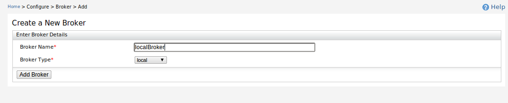
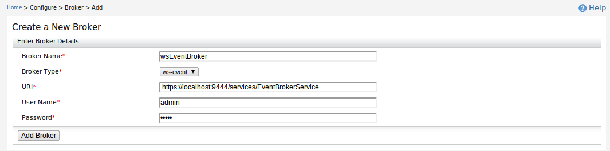
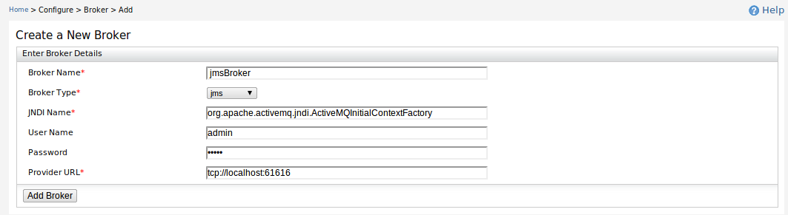
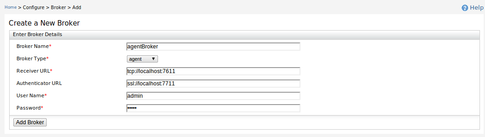
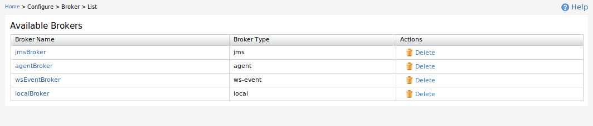

There are four broker types available to create such as Local, WS-Event, Agent and JMS.

Figure 1: Create Local Broker
To create a local broker, only the broker name is required.When Local Broker is used CEP will use Local Transport when receiving events from the broker and sending events to the broker.

Figure 2: Create WS-Event Broker
WS-Event Broker can be used to send and receive XML/SOAP messages as WS-Events.

Figure 3: Create JMS Broker
Using JMS Broker any type of XML and Map events can be sent as JMS events using JMS transport.

Figure 4: Create Agent Broker
Agent Broker is a broker that handles WSO2 Common Events. This can receive events over Thrift using TCP, SSL, HTTP, and HTTPS, and it can also receive JSON events via HTTP and HTTPS.CEP is shipped with an Agent Broker which will be used to receive fired events and handover them to CEP using Local Transport. From CEP we can send output events to any Agent Broker using Thrift over TCP, SSL, HTTP, or HTTPS.

Figure 5: List Brokers
All the created brokers are listed and can be deleted.